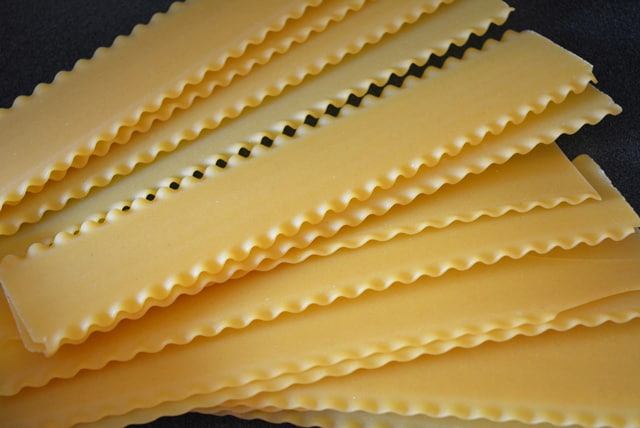

Lasagna Noodles

Description
Makeing your own noodles never was easier than with the recipe we are describing here.
Remember that it is not necessary due to the vast good options that we have to buy in the supermarkets,
but the full experience of making all your ingredients is always worth it.
Ingredients
- Flour
- Salt
- Eggs
- Olive oil
Yes, thats it.
Preparation

- In a food processor bowl:
- Pulso flour and salt together
- Then add egg and oil mixture and pulse until there is no dry flour.
- Process about 1 minute
- Then, gather the dough into a smooth ball with your hands
- Cover with plastic wrap and let rest at room temperature for 30 - 60 minutes

- Divide fresh pasta dough into 6 equal pieces and prepare them to go into a pasta machine and roll it at the thickest setting possible.